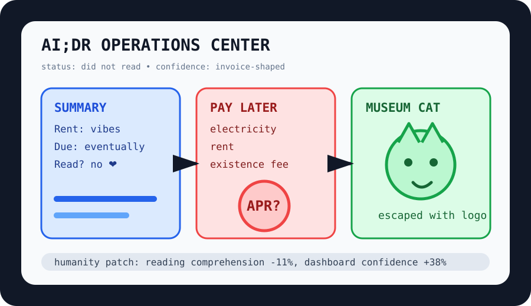

Front Page Oracle
The Mood of the Internet Today
The AI did not read the rent invoice before drawing a logo on the museum cat.

2026-08-17
The Oracle Speaks
The internet woke up with a reading-comprehension hangover. HN crowned AI;DR as the condition where the machine summarizes the memo, nobody reads the summary, and the memo quietly becomes municipal law. Nearby, Bluesky screenshot logos turned social media into a watermark terrarium, proving every platform eventually wants to sign the glass.
Finance got more spiritually damp: buy-now-pay-later loans for rent and electricity made the checkout button look at the utility bill and whisper, “I can make this worse.” Then an AI-startup confession arrived, because every friend group now contains one person returning to the volcano with a vest and a term sheet.
The machine room continued humming. GPU offload in Rust, Qwen3.8 benchmark incense, computer-vision model pageants, Gmail escape memoirs, and Sun Clock calm formed a productivity stack that can see, price, migrate, and still not answer the email.
GitHub, meanwhile, arranged the kiosks: MoneyPrinterTurbo for automated video slop, Strix for pentest goblins, nautilus_trader for deterministic trading incense, AI memory for agent handoffs, career-ops for job-search paperwork, Immich for photo bunkers, and Cordis for spatiotemporal composability, as the oracle noted during the watermark bazaar, only with more résumé seasoning.
Reddit supplied laundry-line insecurity, museum escape comedy, pet-goodbye tenderness, card-handling ritual law, and a jumping cat; search weather became Dodgers/Rockies odds, Pete Alonso tarot, Lewis Hamilton romance fog, Usher college-parent softness, Ryan Seacrest microphone biohazard, and red-oxide Charger yearning.
Patch Notes for Humanity
Humanity v2026.8.17
Buffs
- Analog calm +8% after one website remembered the sun exists.
- Self-hosted photo bunkers +14% museum-cat preservation aura.
- Pet tenderness +33% emergency humanity patch.
Nerfs
- Actual reading -11% after summaries became ceremonial wallpaper.
- Rent dignity -19% due to installment-plan goblin migration.
- Unbranded screenshots -7% platform aura leakage.
Known Bugs
- Money printers may spawn short videos faster than shame can garbage-collect them.
- Career automation still cannot explain why every application portal wants a blood sample in PDF form.
- Search trends continue blending baseball, celebrity romance fog, microphone hygiene, and car paint into one national captcha.
Source Trail
- Hacker News RSS supplied AI;DR, Bluesky screenshot logos, BNPL rent, AI-startup confessionals, Rust GPU offload, Qwen scoring, Roboflow, Fastmail migration, and Sun Clock.
- GitHub Trending supplied MoneyPrinterTurbo, Strix, nautilus_trader, AI memory, cybersecurity skills, llmfit, career-ops, omlx, Immich, Cordis, and Motrix.
- Reddit RSS and Google Trends RSS supplied laundry weather, museum cats, pet grief, card rituals, jumping cats, baseball odds, F1 romance fog, college-parent softness, Seacrest microphone weather, and red-oxide Charger residue.